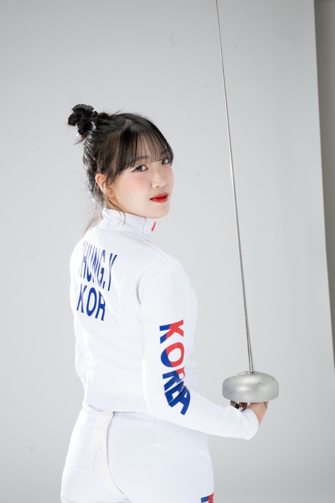

図面の中だけでなく、
建物が建ち、使われ続けていく現場まで
見つめられる建築人を目指しています。
日本大学理工学部建築学科で建築を学んでいます。設計課題に取り組む一方で、建物が実際につくられ、運営されていくプロセスに強い関心を持ち、ビルマネジメント・ゼネコンの建築エンジニア・オフィス空間づくりの技術職と、それぞれ異なる立場からのインターンシップに参加してきました。
大学ではフェンシング部に所属し、全国大会に出場しました。一瞬の判断が勝敗を分ける競技の中で、状況を冷静に読む力と、結果が出るまで練習を積み重ねる粘り強さを身につけました。
日本語・英語・韓国語の3か国語を話せることを活かし、多様なバックグラウンドを持つ人々とチームで協働しながら、人と街をつなぐ建築に携わっていきたいと考えています。
EDUCATION
日本大学 理工学部
建築学科
CLUB
フェンシング部
全国大会 出場
LANGUAGES
日本語 / English
한국어
INTERNSHIP インターンシップ
-
01
5 DAYS
森ビル株式会社
ビルマネジメント
-
02
2 DAYS
大成建設株式会社
建築エンジニア
-
03
5 DAYS
株式会社イトーキ
技術職
EDUCATION 学歴
-
NOW
在学中
日本大学 理工学部 建築学科
College of Science and Technology, Nihon University — Department of Architecture
CLUB 部活動

FENCING
フェンシング部
全国大会 出場
日本大学のフェンシング部に所属し、全国大会の舞台に立ちました。
LANGUAGES 言語
日本語JAPANESE
EnglishENGLISH
한국어KOREAN